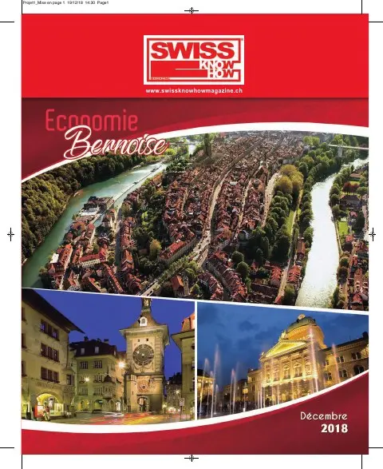
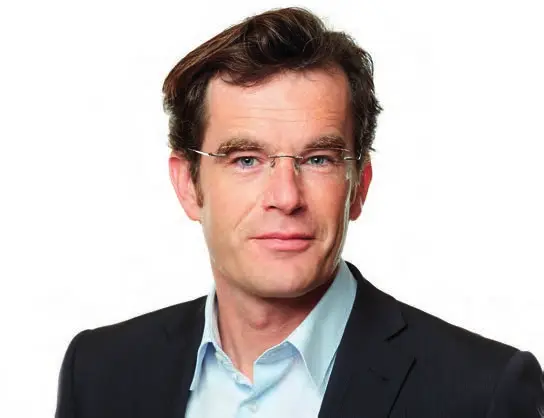
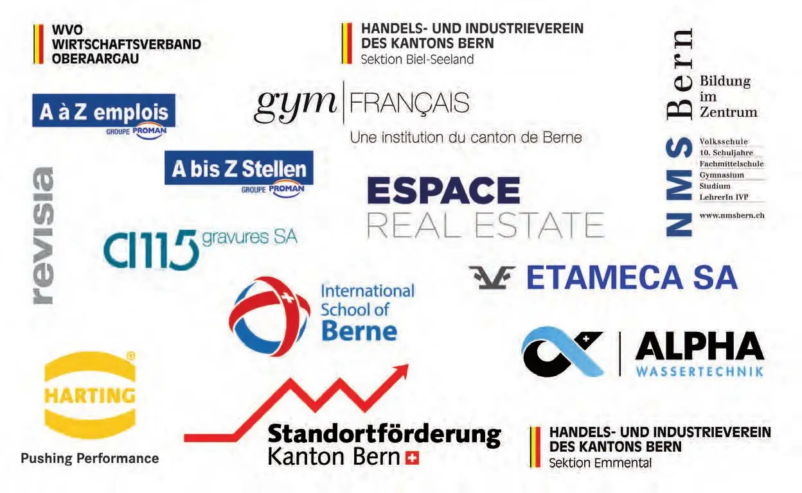
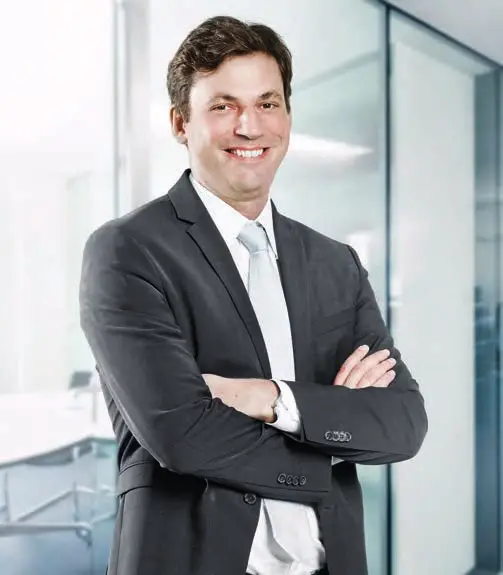
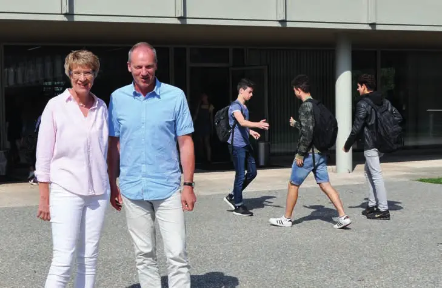
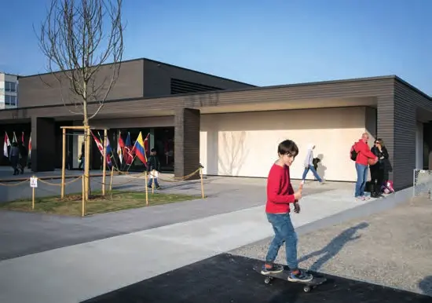
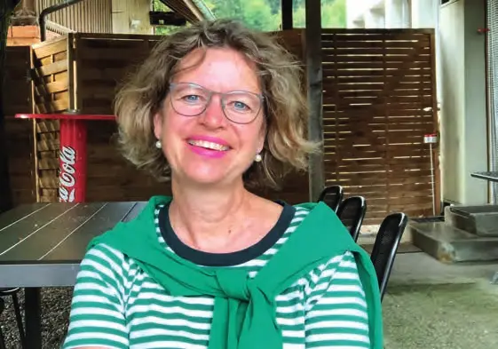
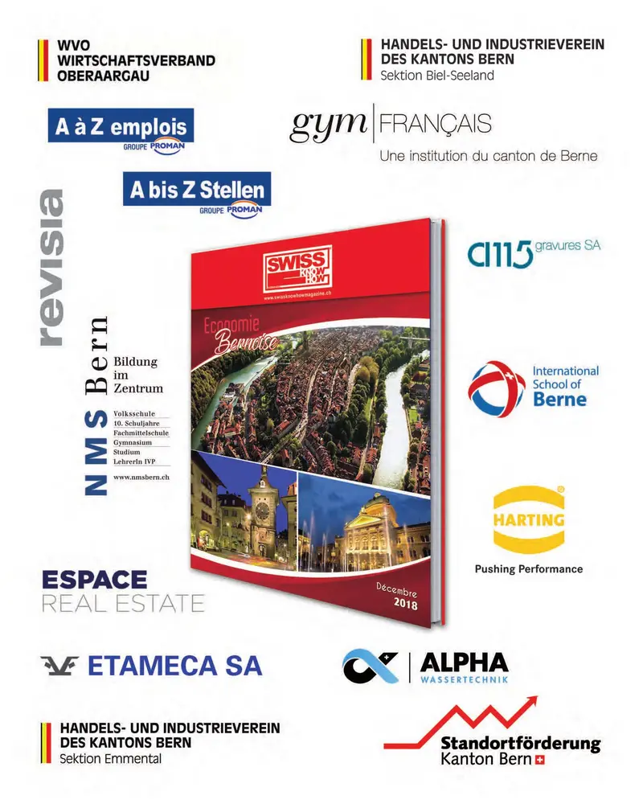
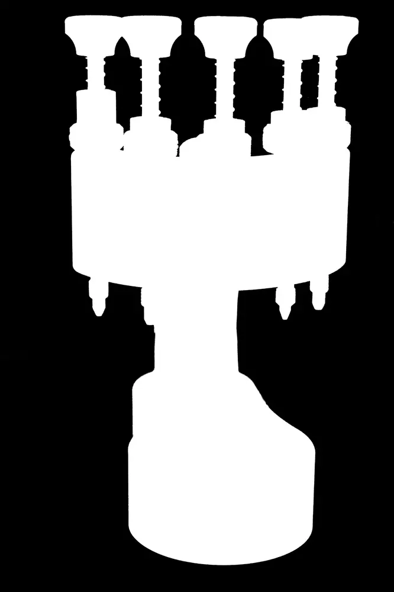

Économie régionale · 2018 · Canton de Berne – Bienne, Seeland, Emmental, Thoune, Oberaargau
Swiss Knowhow – Région bernoise (décembre 2018)
Numéro de décembre 2018 consacré à l'économie du canton de Berne, en allemand et en français. Il réunit les interviews du préfet de Bienne, de la promotion économique cantonale, de la Ville de Bienne, du recteur de l'Université de Berne et des présidents des associations économiques régionales (HIV Biel-Seeland et Emmental, Wirtschaft Thun Oberland, WVO Oberaargau). Suivent des reportages sur des entreprises et écoles biennoises et bernoises : gravure horlogère, placement, traitement de l'eau, immobilier, mécanique, connectique, gymnases et écoles privées, fiduciaire.
Sommaire · 18 articles
Un territoire reconnu pour son bilinguisme, ses infrastructures et son excellence horlogère
Interview de Philippe Chételat, préfet de Bienne
HIV Sektion Biel-Seeland
Im Gespräch mit Fabian Engel, Präsident HIV Sektion Biel-Seeland
Standortförderung Kanton Bern – Kanton Bern, ein innovativer, breit diversifizierter Standort
Interview mit Dr. Sebastian Friess, Leiter Standortförderung Kanton Bern
Sektion Emmental
Interview mit Walter Gerber, Präsident HIV Sektion Emmental

InterviewStadt Biel – « Unsere Stadt befindet sich seit Jahren in einer sehr dynamischen Phase »
Interview mit Thomas Gfeller, Delegierter für Wirtschaft der Stadt Biel
Verband Wirtschaft Thun Oberland – « Im Raum Thun hat sich einer der bedeutendsten Industriecluster herausgebildet »
Interview mit Reto Heiz, Präsident
Universität Bern – Die Universität Bern folgt der Vision « Wissen schafft Wert »
Interview mit Prof. Dr. Christian Leumann, Rektor der Universität Bern
WVO Wirtschaftsverband Oberaargau
Interview mit Béatrice Lüthi, Präsidentin WVO

PublireportageUn graveur au service de l'horlogerie
A 115 Gravures S.A.
Proximité et réactivité au service du recrutement / Nähe und Reaktionsfähigkeit bei der Personalvermittlung
A à Z emplois SA – A bis Z Stellen AG

PublireportageVotre partenaire pour le traitement de l'eau / Ihr Partner für die Wasseraufbereitung
Alpha Wassertechnik AG
Espace Real Estate – Interview mit Lars Egger, Vorsitzender der Geschäftsleitung
Précision et qualité
Etameca SA
« Der Standort Biel/Bienne ist sehr interessant für Harting »
Interview mit Susanne Giehl, Geschäftsführerin

PublireportageDeux têtes valent mieux qu'une / Zwei Köpfe sind besser als einer
Gymnase français de Bienne

Interview« We prepare our students for life beyond school »
Interview with Ms Denise Coates, Director – International School of Berne

InterviewNMS Bern – « Lernende ganzheitlich fördern und fordern »
Interview Annette Geissbühler, Direktorin

InterviewRevisia AG – Im Gespräch mit Christoph Schütz / Entretien avec Christoph Schütz
Entreprises de ce numéro · 19
A 115 Gravures S.A.
Gravure de plaques de tampographie
A à Z emplois SA
Recrutement et placement de personnel

Aiguilla SA
Fabrication d’aiguilles de montres
Alpha Wassertechnik AG
Traitement de l'eau
Espace Real Estate Holding AG
Investissement immobilier
Etameca SA
Mécanique de précision (sous-traitance)
Gymnase français de Bienne
Ecole de maturité
Handels- und Industrieverein des Kantons Bern – Sektion Biel-Seeland
Association économique
Handels- und Industrieverein des Kantons Bern – Sektion Emmental
Association économique
Harting AG
Connectique et composants 3D-MID
International School of Berne (ISBerne)
Ecole internationale
NMS Bern
Ecole privée et formation des enseignants
Préfecture de Biel/Bienne
Administration cantonale
Revisia AG – Treuhandgesellschaft
Fiduciaire et révision
Stadt Biel – Wirtschaft / Statistik
Administration communale
Standortförderung Kanton Bern
Promotion économique cantonale
Universität Bern – Rektorat
Université
Verband Wirtschaft Thun Oberland
Association économique
WVO – Wirtschaftsverband Oberaargau
Association économique
Aucun résultat.